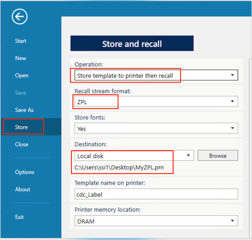

Open and edit nlbl files using c#
//Expert user has replied.
I have a Zebra printer. I have created a nlbl file (using ZebraDesigner for Developers) and I want to open it and give values to its variables (2 variables) using c# code (.NET framework). Then the file has to be sent to the Zebra printer and be printed. How can I do that? Can someone provide me a c# example showing how to accomplish this?
1 Reply
The nlbl files are solely for the ZebraDesigner and should not be used elsewhere. To achieve the template-based printing, you need to export the template design by the ZebraDesigner to the ZPL template files, which are the text files. There is a talk about how to use the ZebraDesigner for Developers to create template ZPL (Slides | Video), or refer to the user guide of the ZebraDesigner for Developers. To export the design to the ZPL files, use the Store option under the File tab. See the screenshot below for the selections of the other options. The final ZPL template is in the .prn file, i.e., the MyZPL.prn file in the example of the screenshot.
